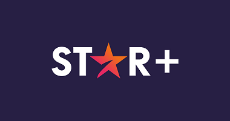
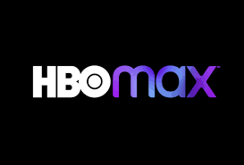

Netflix es un servicio de streaming por suscripción que les permite a sus miembros ver series y películas en un dispositivo con conexión a internet. En función del plan que tengas, también puedes descargar series y películas en un dispositivo con iOS, Android, o Windows 10 y verlas sin conexión a internet.
Star+ es un servicio de streaming propiedad de The Walt Disney Company. Fue lanzado el 31 de agosto de 2021 y se encuentra disponible para América Latina.
¿Qué es Disney+? Disney+ es el servicio de streaming donde podrás ver películas, series, documentales y cortos de todas nuestras marcas: Disney, Pixar, Marvel, Star Wars, National Geographic y Star.

Prime Video es un servicio de streaming OTT de películas y series creado y gestionado por Amazon. Se ofrece como un servicio independiente o como parte de la suscripción a Amazon Prime.
HBO (siglas de Home Box Office; en inglés, «taquilla en casa») es una cadena de televisión por suscripción estadounidense, propiedad de Warner Bros. Discovery a través de su división WarnerMedia Studios & Networks.